Explorar casa
01 / 14
DOCE / Arquitectura residencial
Hay casas.
Y hay formas de
vivir.
Diseñamos el espacio.
Tú le das vida.
01 / Nuestra esencia
Una rama de 33 Grados Arquitectos ↗Una casa es personal.
Su arquitectura
también debería serlo.
Somos DOCE, la rama de 33 Grados Arquitectos dedicada exclusivamente a la arquitectura de casas residenciales. Un espacio para explorar distintas maneras de habitar, desde la primera idea hasta cada detalle del hogar.
02 / Las casas
Distintas historias.
Una mirada residencial.
Recorre los espacios.
Imagina las posibilidades.
Explorar casa
02 / 14
Casa Lomas 12-1
Arquitectura residencial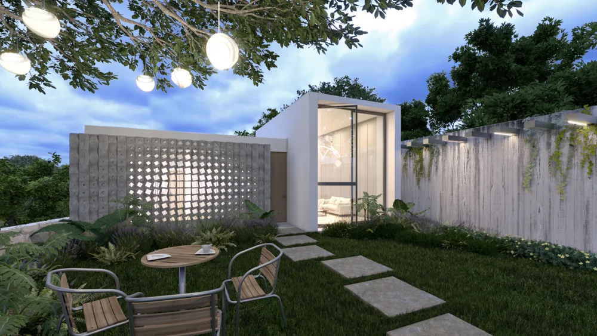
Explorar casa 03 / 14Casa Burgos
Arquitectura residencial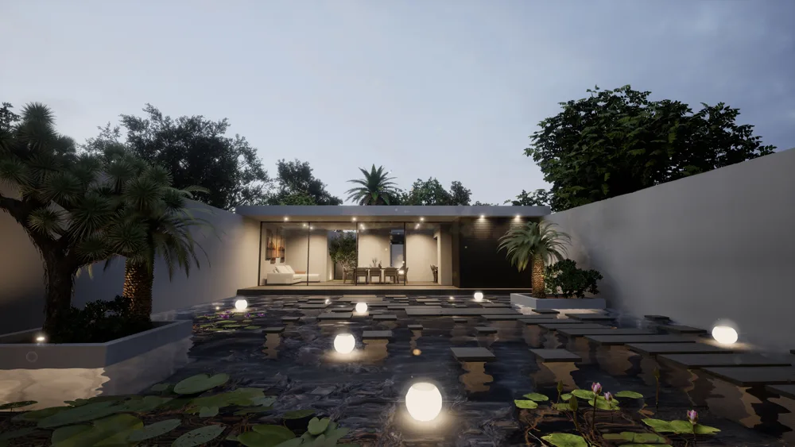
Explorar casa 04 / 14Casa Staines
Arquitectura residencial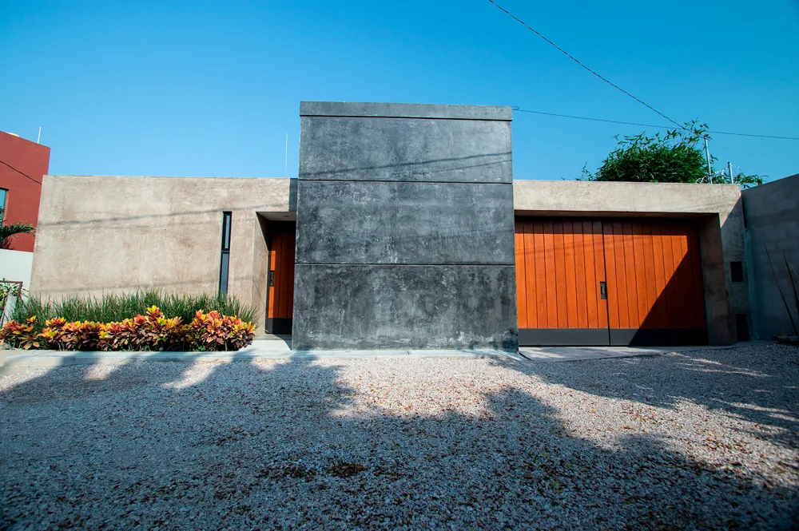
Explorar casa 05 / 14Casa Jacarandas
Arquitectura residencial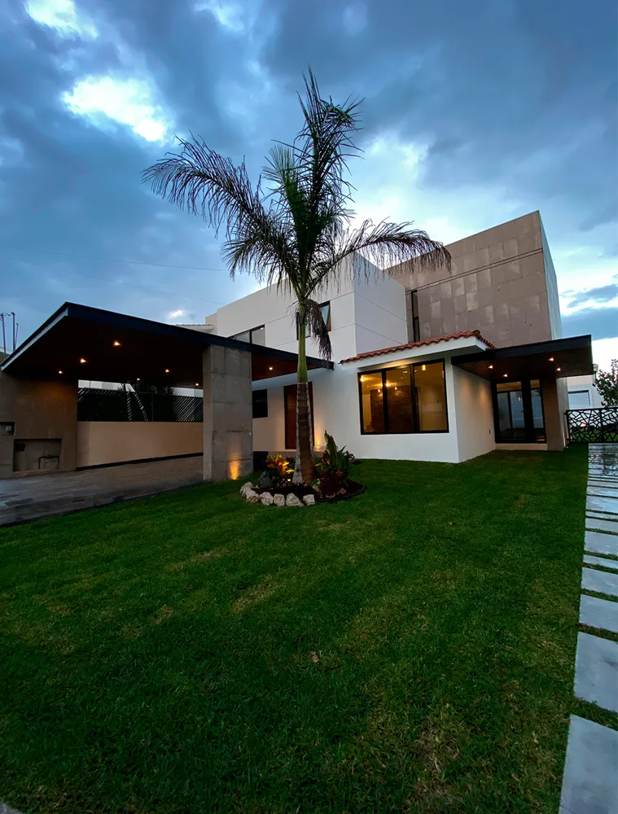
Explorar casa 06 / 14Casa Olmecas
Arquitectura residencial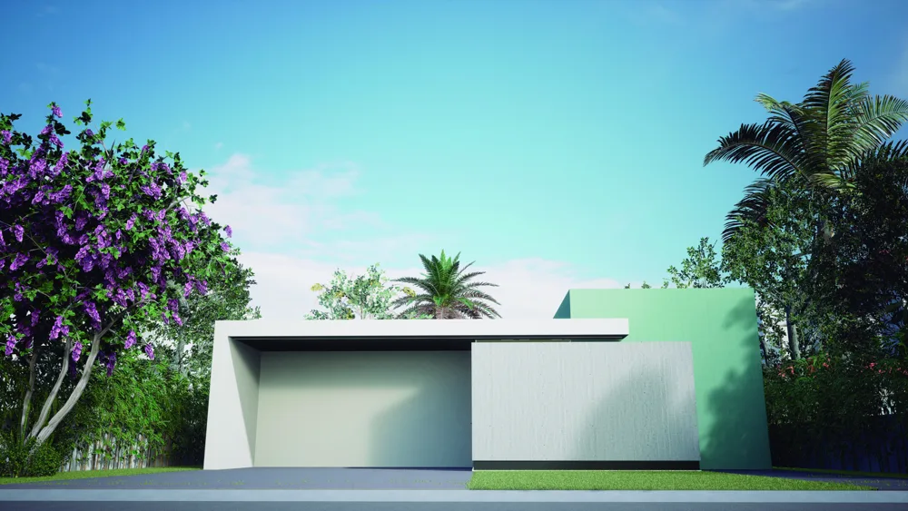
Explorar casa 07 / 14Casa Lomas 12-3
Arquitectura residencial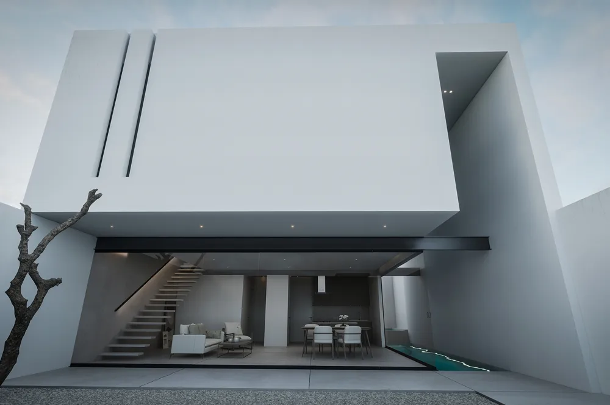
Explorar casa 08 / 14Casa Nacozari
Arquitectura residencial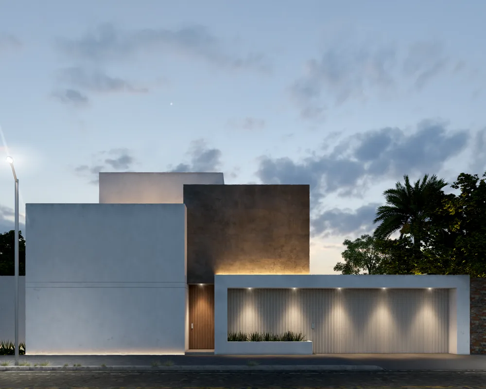
Explorar casa 09 / 14Casa Olintepec
Arquitectura residencial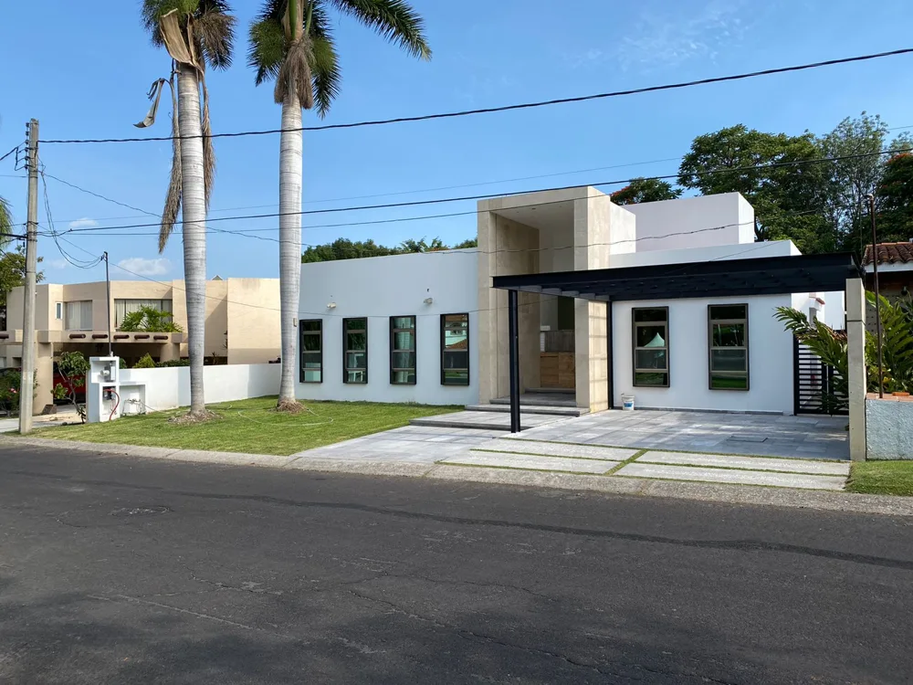
Explorar casa 10 / 14Casa Cobá
Arquitectura residencial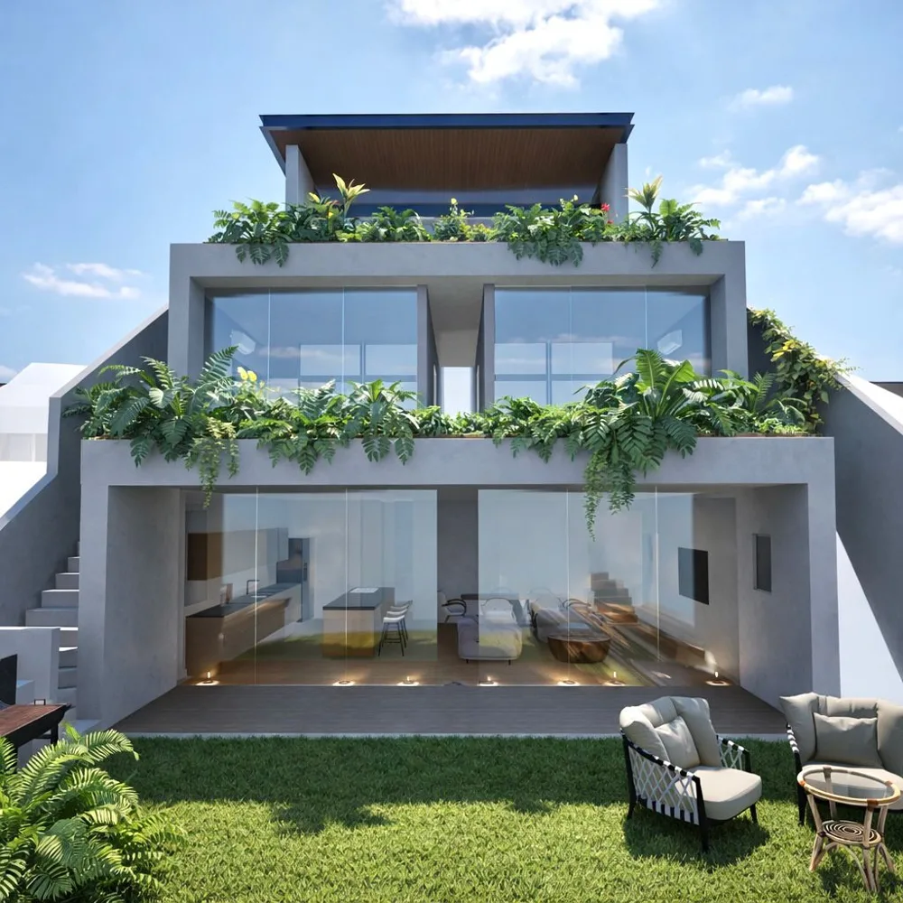
Explorar casa 11 / 14Casa Serena
Arquitectura residencial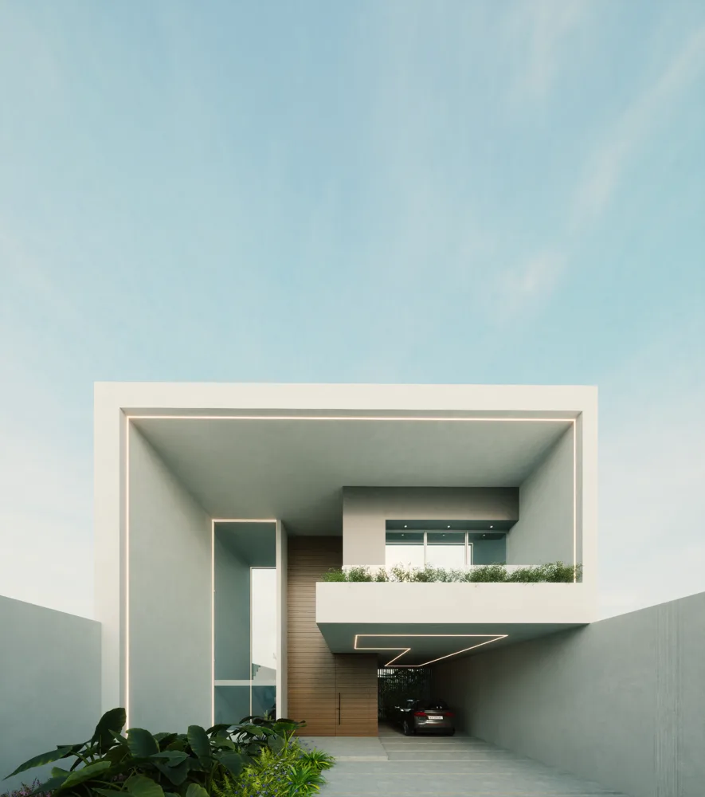
Explorar casa 12 / 14Casa Yeca
Arquitectura residencial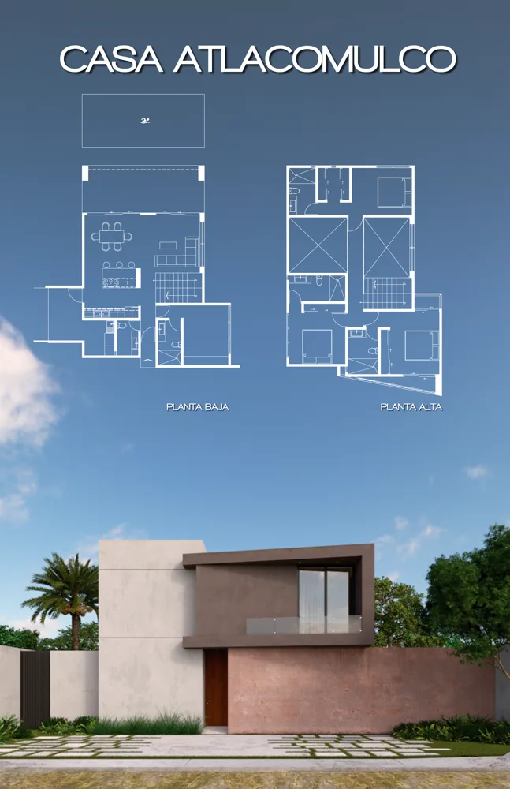
Explorar casa 13 / 14Casa Atlacomulco
Arquitectura residencial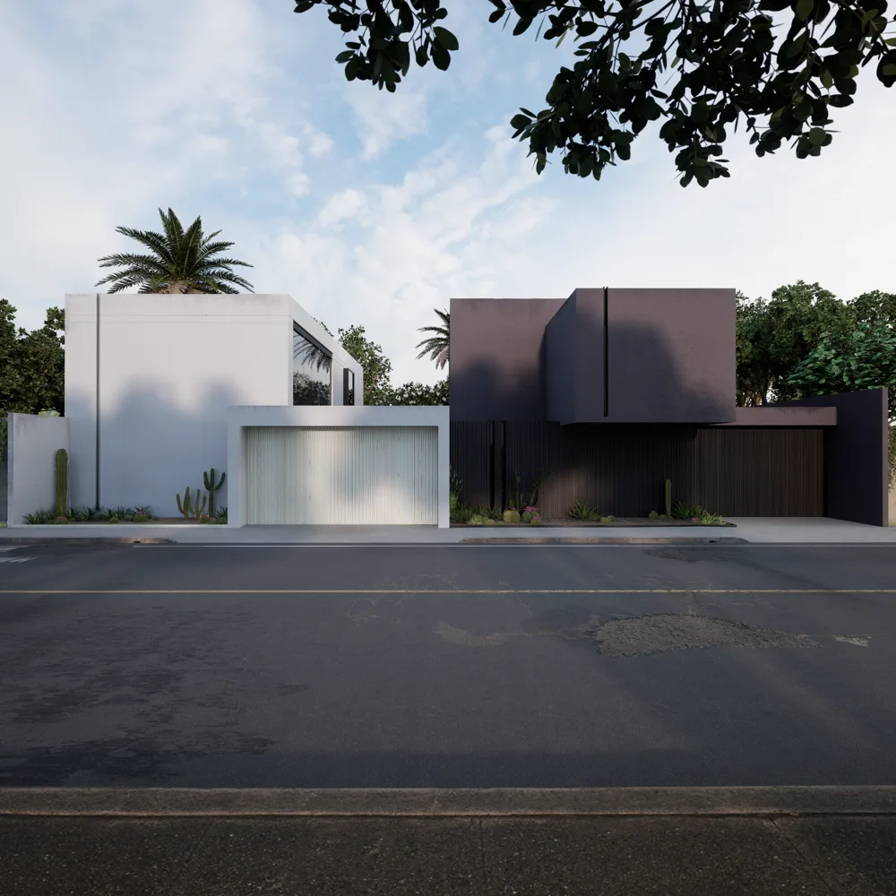
Explorar casa 14 / 14Casas Claroscuro
Arquitectura residencialNo encontramos una casa con ese nombre. Prueba con otro nombre.
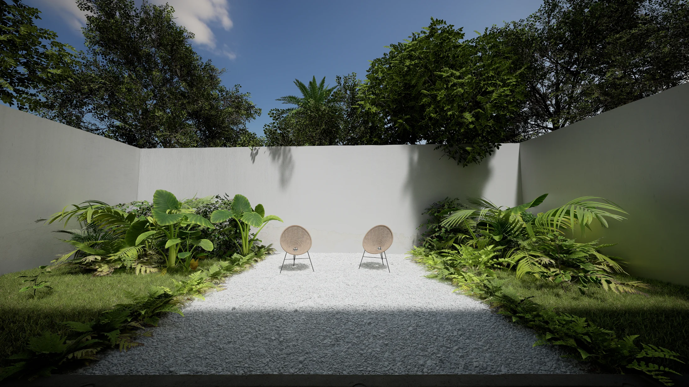
La naturaleza también habita aquí.03 / Somos DOCE
El lujo de
sentirte en casa.
La luz que transforma un muro. Un jardín que se vuelve parte del interior. Materiales que invitan a quedarse. Nos interesan los detalles que hacen de una casa un lugar propio.
01 Una arquitectura para tu vida02 La relación con el entorno03 El cuidado de cada espacio
Conoce nuestras casas 04 / Tu próximo proyecto
Todo empieza
con una idea.
Cuéntanos cómo te gustaría vivir. Estas preguntas nos ayudan a entender tu proyecto y preparar una primera conversación contigo.
- 01Te escuchamos
Nos compartes tus necesidades y lo que imaginas.
- 02Revisamos tu proyecto
Analizamos la ubicación, el alcance y la información que nos envíes.
- 03Conversamos contigo
Te contactamos para aclarar detalles y acordar los siguientes pasos.
Diseñemos tu casaPaso 1 de 3
- El proyecto
- Tu idea
- Hablemos
El primer paso está dadoGracias por
Gracias por
compartir tu idea.
Tu solicitud fue enviada. El equipo de DOCE revisará la información y te contactará para conocer mejor tus necesidades y acordar los siguientes pasos.